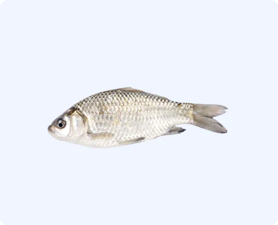

Живец
Живец карась
Цена и наличие
- 4-6 см0,7 BYN / шт.В наличии
- 6-10 см1 BYN / шт.В наличии
Данные на 23.11.2026.
Характеристики
- Размер
- 12-20 см
Описание
Живец-карась предназначен для рыболовов, желающих увеличить свои шансы на успешную ловлю (хищных рыб) и добиться наилучших результатов.
Живец карась представляет собой живую рыбку, которая нанизывается на крючок для использования в качестве приманки при рыбной ловле. Карась выбирается в качестве живца из-за его активности в воде, привлекательного для хищной рыбы вида и способности выдерживать нахождение на крючке. Преимущества: Рыболовный живец обладает естественными движениями и запахом, что делает его очень привлекательным для хищной рыбы. Живец может быть успешно использован при ловле различных видов хищных рыб, таких как щука, судак, окунь и другие. Использование живца значительно увеличивает шансы на успешную ловлю, так как он подталкивает рыбу к агрессивным атакам. Недостатки: Живец требует определенного ухода и внимания. Он должен быть сохранен в живом состоянии до момента использования, что может потребовать специальных условий хранения. Выбор живца и его правильное нанизывание на крючок требует определенного опыта и навыков.
Советы по использованию
Живец карась – это эффективное приманочное средство для рыбалки, особенно при ловле хищных рыб (щука, окунь, судак и другие виды рыб). При выборе живца обращайте внимание на его активность, цвет, состояние плавников и чешуи. Свежий и здоровый живец будет более привлекательным для рыбы. Если активность живца начинает уменьшаться, замените его на свежего. Активный и подвижный живец привлечет больше внимания хищной рыбы. Если вы собираетесь длительное время рыбачить, подумайте о способах сохранения живца в живом состоянии. Используйте ведра с водой, насыщенной кислородом, и поддерживайте комфортные температурные условия. Выберите крючок и удочку, соответствующие размеру и типу живца. Это поможет увеличить эффективность ловли. Использование живца может значительно улучшить ваши шансы на успешную рыбалку, но важно помнить о заботе о живце, этических аспектах и соблюдении местных правил.